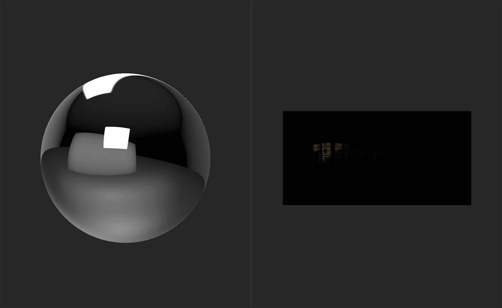
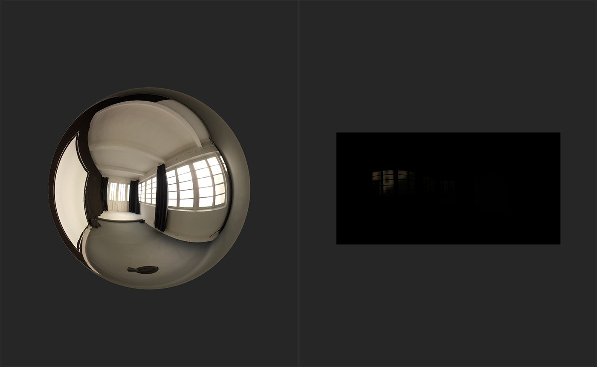

In: HDRI Tools
The HDR Merge filter lets you merge a collection of SDR (Standard Dynamic Range) images to create an HDR image.
The images below show the results of the HDR Merge.

Before the HDR Merge is done, the sphere in the 3D view reflects the default environment light. The 2D view displays the imported image data for the first scan image by default, which in this case is the lowest exposed image.

After the HDR Merge filter is added, the sphere reflects a new environment light - the HDR image generated from the input images.
Basic parameters
Watch this to find out how to use the HDR Merge filter as well as other filters that can help in converting SDR images into an HDR environment light.
The basic steps to use the HDR Merge filter are as follows: